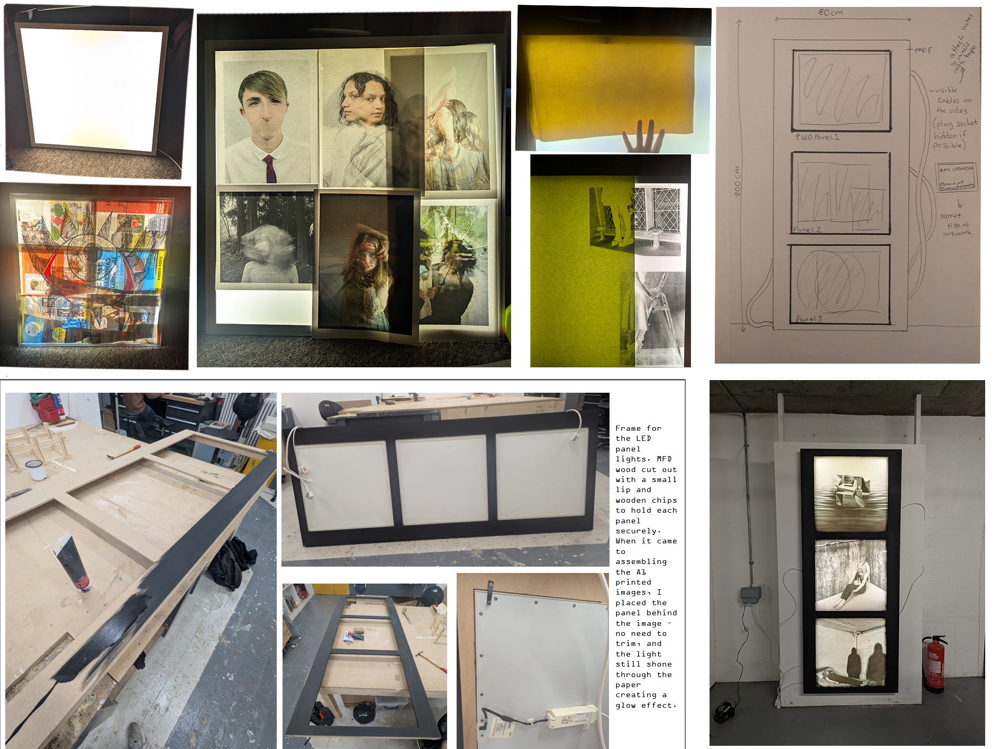
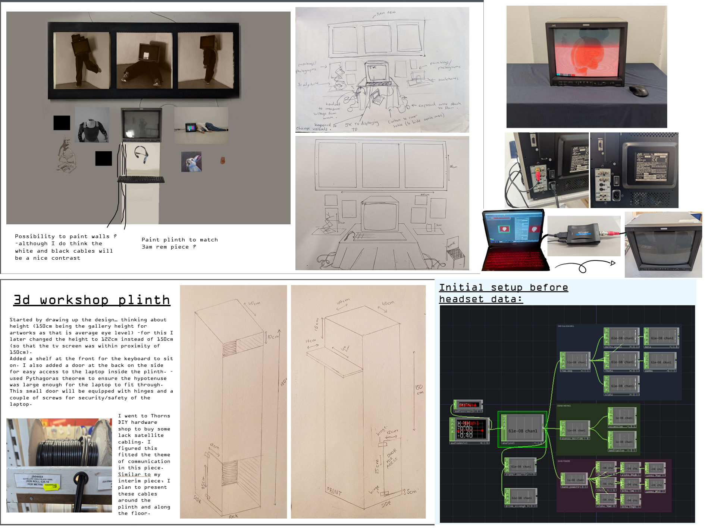
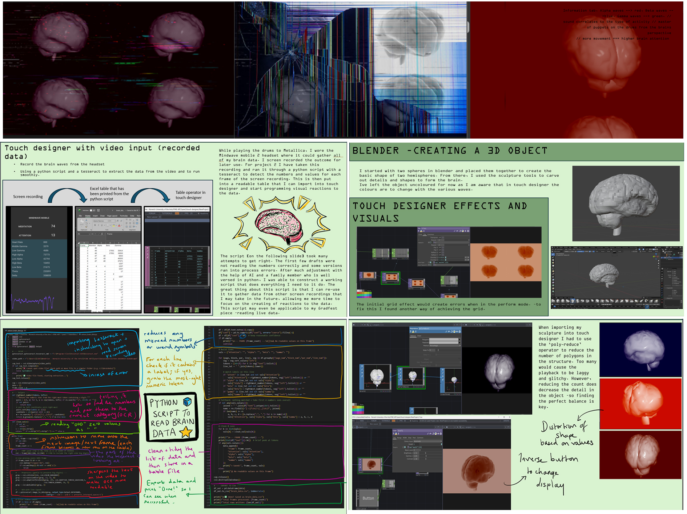
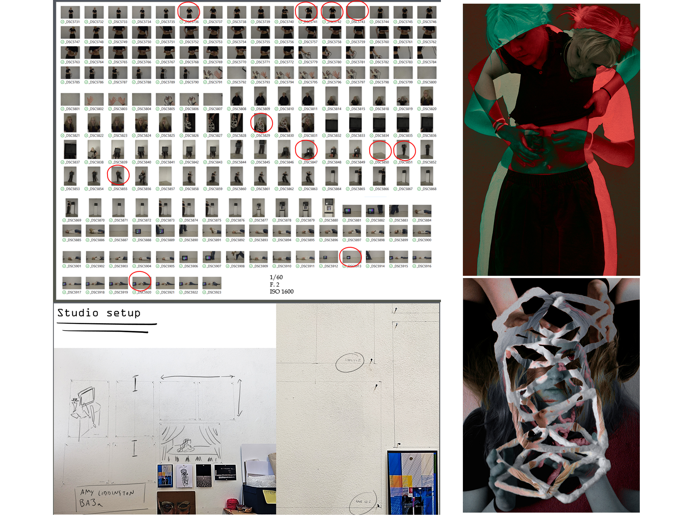

The Artists Process
How do artists keep their creativity flowing ? SAY NO TO ARTIST BLOCK = create collages !
The following are projects/pieces of art constructed, thinking through making

3am REM
Light panels, MDF frame, (2026)
This is part of a documented process that eventually led to the development of 3am REM which became part of a public art show [Interim]. Initially experimenting with colour, paper and various textures I worked my way around an idea to display Photography with the use of recycled LED light panels. After planning and sketching my ideas, I re-wired the panels and constructed and painted A wooden frame out of MDF wood. 3am REM is based on an interpretation of a dream i had, displaying three remembered scenes within triptych form.

Gradfest Installation
Upcoming show in July (2026)
This is the current process of my end of university art piece, which is to be on display in a gallery setting in Norwich and in London at the Free Range art exhibit later the same month. This has been an ongoing project for the last few months. it includes a mixture of previous artworks including 3am REM and aspects from Datallica (2025). In the above image you can see hands-on building/design of plinths and overall installation, visual programming and the process of connecting/live streaming from laptop to old JVC broadcasting monitor.
This interactive piece uses brain data; a process meant to explore the conscious and unconscious interactivity between human and machine. -this can be seen via a brain scanning headset setup, of which viewers are encouraged to wear. As they dawn the headset, the video art on the JVC television distorts and becomes unfamiliar with the use of their own brain waves. The conscious interaction includes the option to press keyboard buttons which changes the presentation of the screen or the way that their brainwaves alter the video.

Datallica
(2025)
This artwork was very much so an exploratory process. -with a brain reading headset from an abandoned company (with outdated broken software), I was forced to take a detour on the road to success. I wanted to see the effects of the brain readings I was receiving on various physical tasks. One task in particular was drumming. As an accomplished drummer I was intrigued to connect music and my current art practice. The headset picked up brain readings while I played the drums to Master of Puppets by Metallica. I screen recorded the change in data from the headset readings on my phone and created a python script to read and reconstruct the data in the video. This was then transformed into a table of the brain readings per second. Using Touch Designer (a visual programming software), I programmed various affects from these readings onto a sculpted 3D brain with 3D scultpting software Blender.
The result? A brain display that changed colour dependent on value of brain waves (blue= beta waves, green=gamma waves, red=alpha waves), changed the structure of the display brain (heightened brain activity= higher level of distortion). I made sure to sync Master of Puppets to the display so viewers could listen to parts of the song and see at which points changed my brainwaves as I played.

Photography process
(2026)
////